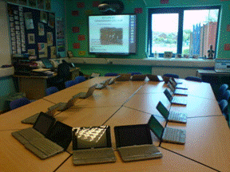

Search the Case Studies
Search the Articles
Search the Membership
Search MirandaNet
MirandaNet Fellowship Casestudy
Membership List | Publications | Research | Specialist Area List | Braided Learning Ejournal

A Digital Day in the Life of a Rural Essex School
24 Hours of teaching in the classroom.
David Townsend
Year of posting: 2009
Abstract:
Since the day that I became a MirandaNet Fellowship scholar I have enjoyed the many exchanges by email with colleagues around the world and I have been fascinated by the diversity of opinion and the wide-ranging technical levels of those involved. I have often struggled to understand the technical complexities and feel a fraud, and then on the other hand someone will postulate a ‘new’ idea and I think ‘been there, done that, moved on’. I am resolutely an end-user. I rely on my more technically minded colleagues to understand how something happens and I step back when I think that I am getting too close to the ‘techie’ stuff. My teaching innovation becomes creative because I don’t know that something is impossible! When I innocently ask “can we do this?” a more knowledgeable colleague will say “No”. When I persevere they sometimes say “Well, maybe”. I want my ICT to be market-orientated not product-orientated. I want to be able to say this is how I want to teach in the future can you find out how I can do that with ICT. I find it frustrating when a company tells me they have come up with a brilliant new front-end for a standard idea and expect me to come up with a way to use it.
I thought that one way of seeing where I am in the scheme of things would be to let MirandaNetters comment, if they want to, on the way I do things now, and in the way of good teaching practice I thought the ubiquitous journal would explain. So here is a digital day in the life of a rural Essex school.
Keywords:
Outlook, ePortal, remote access, thin-client, PDA, data-loggers, PLE/VLE, ActiveExpression, hand-helds, mobile broadband,
Study
This illustrated case study can be viewed in the MirandaNet publications section.
In addition, the case study can be downloaded in Microsoft Office 2007 Word (readable by older versions of Word). If you are interested in this case study but are unable to open the document, please email me and let me know what Word or PDF format you would prefer (email link on the Publications page).
Download Digital Day (Word 960 KB)
MirandaNet Members can go to the Log on/off area to edit their own casestudies.
[Back]